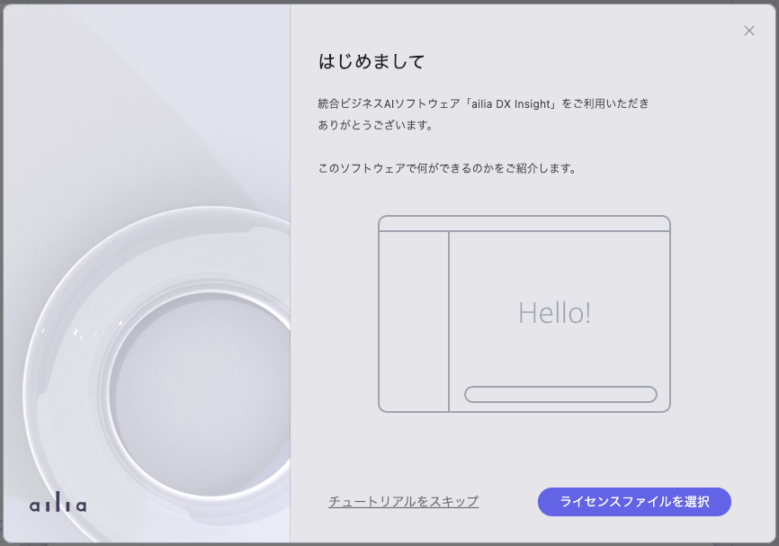
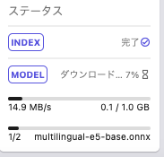

|
ailia DX Insight 0.9.0
|
ailia DX Insightをダウンロードして、zipを解凍します。
Windowsの場合は、ailia_dx_insight.exeをダブルクリックして起動します。 macOSの場合は、ailia_dx_insighe.appを右クリックして開くで起動します。
OpenAIのWEBページでアカウント登録を行い、OpenAIのAPIキーを取得します。 OpenAIのAPIキーを入力しなくてもailia DX Insightは使用できますが、機能が制限されます。
初回起動時にはチュートリアル画面が表示されます。

チュートリアルの最終画面にて、OpenAI APIキーの設定が可能です。
初回起動時のチュートリアルの終了後、AIモデルのダウンロードが開始されます。
ダウンロードの進捗は左のサイドバー下部にて確認できます。

ダウンロード完了後、ailia DX Insightが使用可能となります。